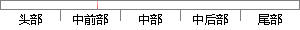

另外，经常用到的方法还有决策树，支持向量机（Support Vector Machine, SVM）以及贝叶斯分类方法等。
片段位置图

相似结果|
1
原句片段：另外，经常用到的方法还有决策树，支持向量机（Support Vector Machine, SVM）以及贝叶斯分类方法等。
相似片段 1：支持向量机(support vector machine)是一种分类算法,通过寻求结构化风险最小来...说明了SVM使用非线性分类器的优势,而逻辑模式以及决策树模式都是使用了直线方法...
相似片段 2：解答,远远高于逻辑模式(GLM)以及决策树模式(DT),因为后两者都是使用了直线方法...支持向量机SVM 支持向量机(support vector machine,SVM)是由Cortes和Vapnik在1995...
|
※ 片段修改建议 ※
近似词参考：- 另外：别的 此外
- 经常：常常 每每 时常
- 常用：经常使用
- 方法：方式 要领 法子
- 还有：另有
- 支持：撑持 支撑
- 以及：和
- 方法：方式 要领 法子
系统自动生成语句：别的，常常用到的方式另有决策树，撑持向量机（Support Vector Machine, SVM）和贝叶斯分类方式等。
注：本片段修改建议为系统自动生成，仅供参考。